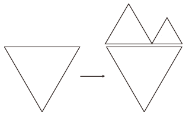
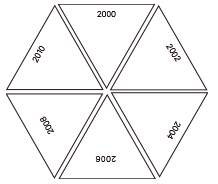
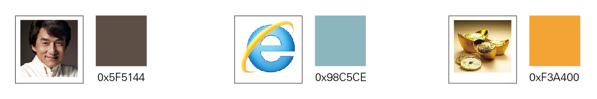
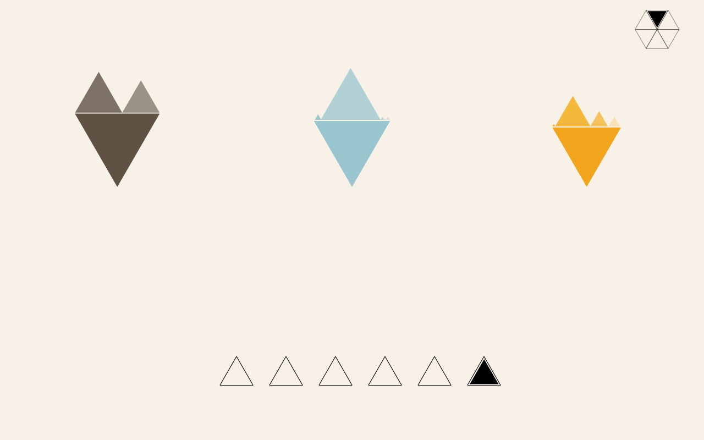

Die Entwicklung des Internetes in China
2.Semester, Personal


Kurze Beschreibung
Das Projekt bezieht sich auf die Gestaltung des Kalenders, bzw. die Visualization von Dateien. Hiermit liegt der Fokus darauf, ausschließlich durch die Farbe, die Form sowie die Interaktionsverhalten die Statistiken darzustellen. In meinem Projekt geht es um die Entwicklung des Internets in China im Zeitraum zwischen 2000 und 2010.
Recherche
Über diese Thematik kann man im Internet viele Daten finden. Ich versuchte aus den vielen Daten die repräsentativesten auszusuchen. Schließlich habe ich drei Haupt-Kriterien ausgewählt. Einmal Nutzerzahlen, dann die Anzahl von Webseiten sowie der Umsatz. Außerdem recherchierte ich weiter um meine Themengebiete weiter auszubauen und konkreter darstellen zu können.
Nutzerzahlen: Männer, Frauen
Anzahl von Webseiten: Unternehmen, Handel, Personal, Reigierung&Bildung, Sontige
Umsatz: Online-Shop, Online-Werbung, Online-Spiel, Mobile Internet, Sontige
Form
Wegen der Eigenschaften des gleichseitigen Dreieckes sind die Beziehungen zwischen der Länge, der Höche und der Fläche besonder. Und ich habe insgesamt die Daten von sechs Jahren visualisieren. Daher war meine Idee durch die Eigenschaften von gleichseitigen Dreiecken kann ich viele interessante Varianten ausprobieren. Und die Form der gleichseitigen Dreiecke symbolisiert eine mystische Kraft und die High-Technologie.


Farbe
Nutzerzahlen, Anzahl von Webseiten, Umsatz

Struktur
Links: Wenn man ein Jahr auswählt, kommt die entsprechende Datei dieses Jahres hervor.
Rechts: Im Gegensatz zu dem Linkes kann man die Jahre miteinander vergleichen.


Screenshot


Interaktionsverhalten
Mouse Over: aktiviert die Dateien eines Jahres
Mouse Click: aktiviert die Dateien von mehr als einem Jahr
beseitigt die von Mouse_OVER aktivierten ausführlichen Daten
Die Rotation der Daten-Dreiecke verändert sich nach der Anzahl der Auswahl. Das Dateien-Dreieck der ersten Auswahl bleibt immer an der original Position. Das Dreieck das als zweites ausgewählt wurde, rotiert um 60 Grad. Die Reihefolge der Auswahl wird im Bereich des Jahres durch verschiedenen Farben zum Auasdruck gebracht.